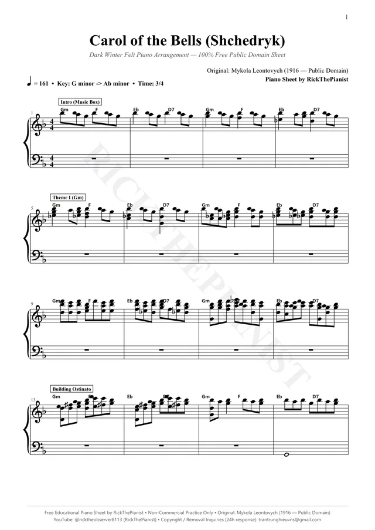
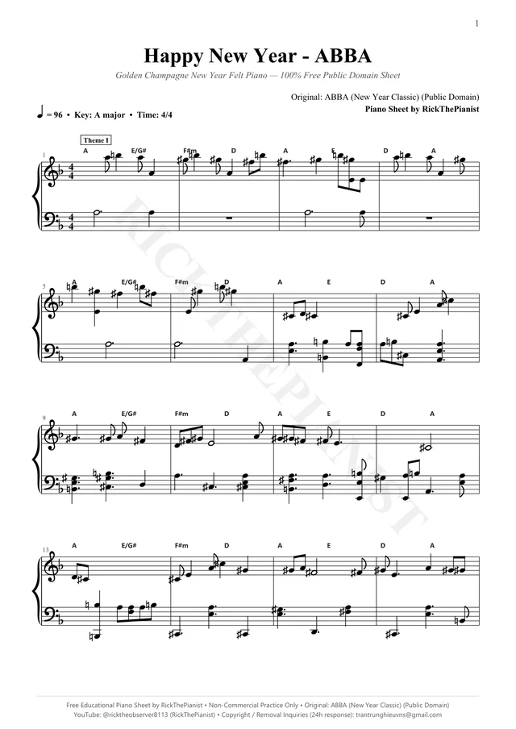
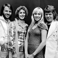

O Holy Night (Cantique de Noël)
Adolphe Adam
Celebrate the 2026 holiday season with calm, cozy felt piano arrangements tailored for home practice, church recitals, coffee shop ambience, and winter study nights. Every public-domain carol in this collection—including O Holy Night, Carol of the Bells (Shchedryk), Dance of the Sugar Plum Fairy, We Wish You a Merry Christmas, and Auld Lang Syne—is engraved for US Letter & A4 printers inside our 100% Free 11-Song Winter & Classical PDF Pack on Gumroad ($0+ Pay-What-You-Want).
Adolphe Adam

Mykola Leontovych (1916)

Pyotr Ilyich Tchaikovsky (1892)

Robert Burns / Traditional

Traditional Holiday Carol

Mariah Carey


ABBA

George Michael / Wham!

Sia

Bobby Helms
Modern holiday classics such as All I Want For Christmas Is You, Last Christmas, Snowman, Jingle Bell Rock, and Happy New Year include synchronized falling-notes YouTube tutorials, verified chord progressions, and two-hand felt-piano practice guides so you can master warm holiday voicing without copyright confusion.
All public-domain Christmas and New Year arrangements—Carol of the Bells, O Holy Night, Dance of the Sugar Plum Fairy, We Wish You a Merry Christmas, and Auld Lang Syne—are included free ($0+) in our printable 11-Song Public Domain Piano Pack on Gumroad.
Yes. Every felt piano arrangement balances expressive warmth with comfortable hand spans and clear chord progressions. Start at 65% tempo alongside our falling-notes YouTube tutorials before bringing each carol up to performance speed.
Yes. Our Complete 44-Page Winter & Classical Sheet Book ($9.99 on Gumroad) bundles all 11 US Letter & A4 printable Public Domain scores together with all 11 tempo-locked MIDI files for Synthesia, Piano Marvel, or DAW study.